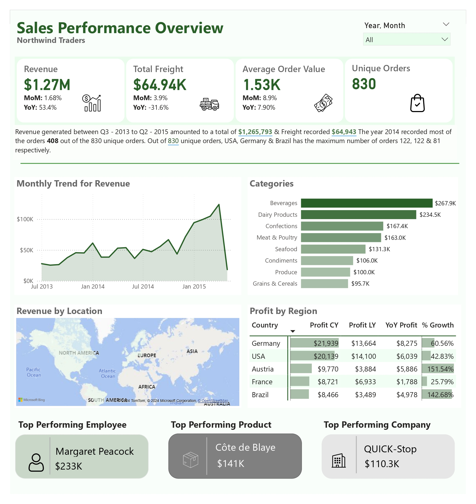
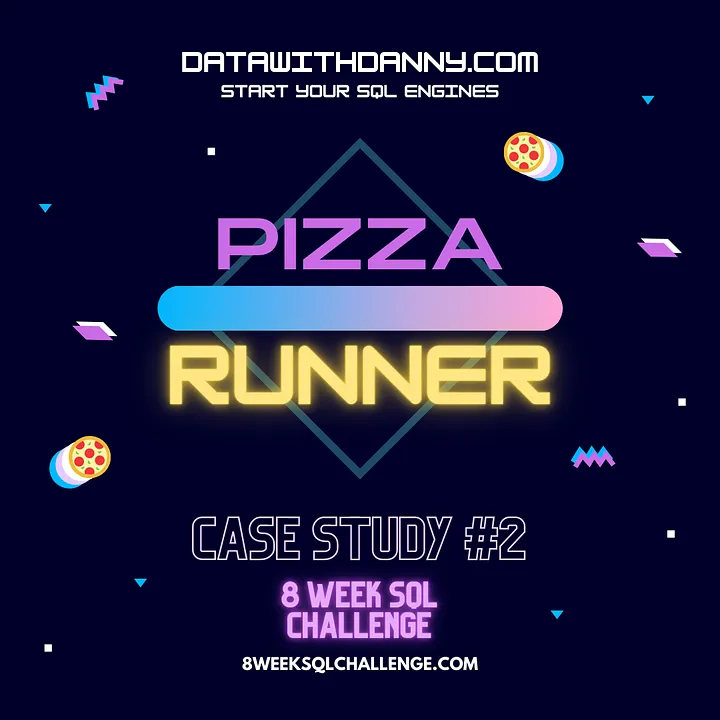
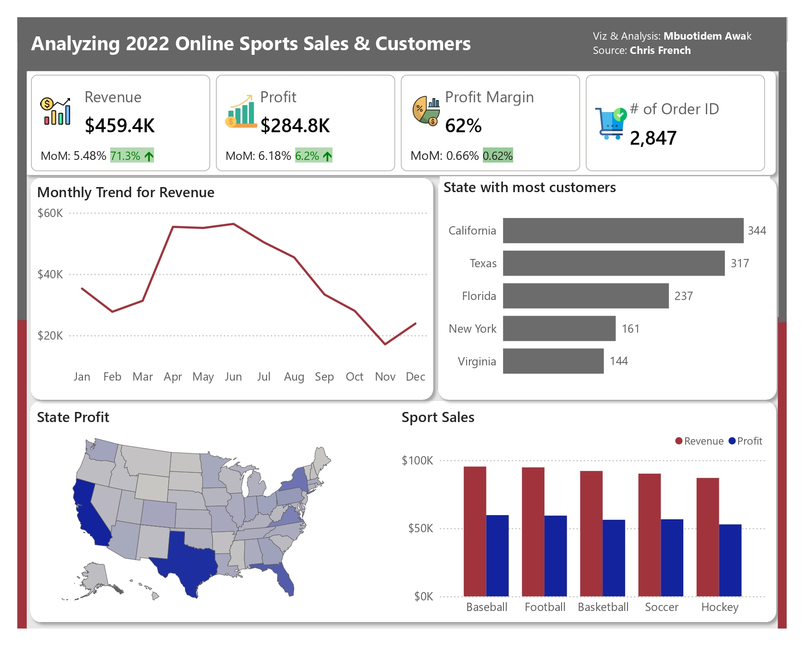
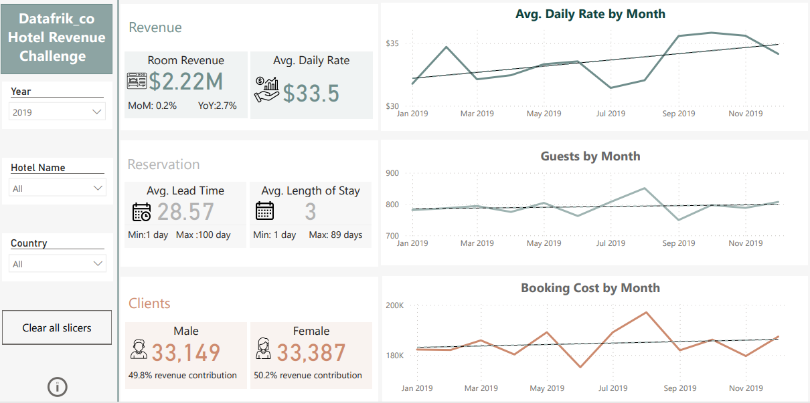

This project offers a comprehensive analysis of sales performances. It includes metrics such as total no of active and inactive products, on-time delivery, cancellations, with visualizations like heat maps and line charts to highlight trends over time


This database comprises 5 tables and they are broken up by area of focus including:
A. Pizza Metrics
B. Runner and Customer Experience
C. Ingredient Optimisation

The Call Center Perfomance Dashboard provides an overwiew of various call center metrics. It includes insights on key performance indicators (KPls) such as average handling time (AHT), first call resolution (FCR) rate, customer satisfaction (CSAT) score, and service level agreement (SLA) compliance.

This Project involves three main parts. First, I used Excel for data cleaning. Then, SQL for data exploration and Power BI to build reports. It uses various visualizations such as map chart, bar chart and scatter plot.

Conducted an exploratory data analysis using SQL to gain insights into Danner Diner's customer visiting patterns, menu, and sales data.

Revenue management dashboard showing key hotel revenue metrics, room demand and seasonality. It features bar charts, custom tool tips, and trend lines to illustrate key performance indicators (KPIs).
_page-0003.jpg)
This dashboard offers a comprehensive analysis of Forggith Pharmaceutical's performance showing distribution channel, product and target demand.